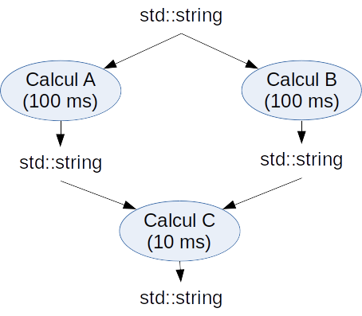
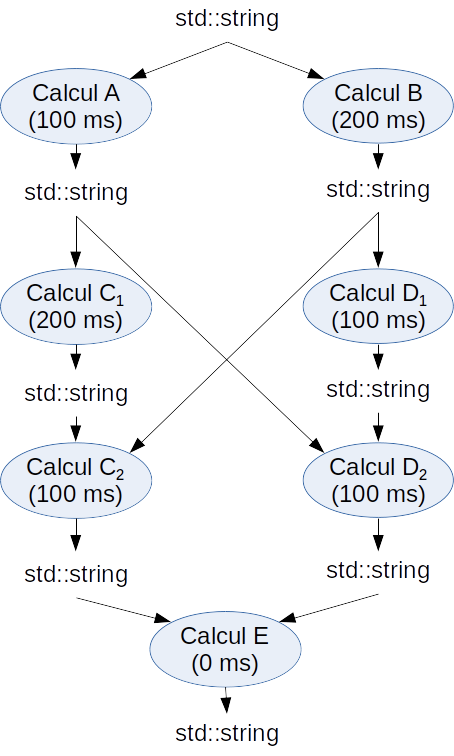
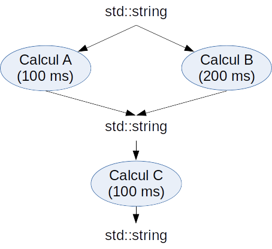

Programmation système et synthèse
Le TP se décompose en une série d'exercices courts et un problème plus conséquent.
Le but de cette première partie est d'aquérir les bases de la programmation multi-thread et de la programmation réactive (i.e à base de future) en C++11.
Les exercices présentent une progression : chaque exercice est destiné à illustrer l'utilité de nouveaux objets ou fonctions (comme
Dans la suite on considère un ensemble de calculs à réaliser. Certains de ces calculs, dits "atomiques", peuvent s'exécuter en parallèle ; d'autres sont dépendants, en particulier lorsque le résultat d'un calcul A sert d'argument à un calcul B. Ces relations peuvent être résumées par un graphe de dépendance comme illustré sur la figure suivante.

Chacun des exercices qui suit (à l'exception du dernier) propose un graphe de dépendance. A vous de concevoir une implémentation multithread qui réalise l'ensemble des calculs atomiques de chacun de ces graphes en un temps minimal.
A des fins de simplification, les calculs atomiques seront simulés : ils consisteront à produire une
Le fichier
std::future, std::async, std::shared_future, std::thread, std::promise, std::atomic, etc).
Dans la suite on considère un ensemble de calculs à réaliser. Certains de ces calculs, dits "atomiques", peuvent s'exécuter en parallèle ; d'autres sont dépendants, en particulier lorsque le résultat d'un calcul A sert d'argument à un calcul B. Ces relations peuvent être résumées par un graphe de dépendance comme illustré sur la figure suivante.
Chacun des exercices qui suit (à l'exception du dernier) propose un graphe de dépendance. A vous de concevoir une implémentation multithread qui réalise l'ensemble des calculs atomiques de chacun de ces graphes en un temps minimal.
A des fins de simplification, les calculs atomiques seront simulés : ils consisteront à produire une
std::string contenant le nom du calcul et les valeurs des arguments reçus, eux mêmes supposés être
des const std::string &.
La durée du calcul sera simulée en introduisant un délai d'attente dont une valeur est donnée dans le graphe de dépendance à titre d'exemple.
Ainsi le calcul C du graphe précédent pourra être réalisé par la fonction :
// a et b contiennent les valeurs de retour des calculs A et B.
std::string C(const std::string& a, const std::string& b) {
std::this_thread::sleep_for(10ms);
return "C(" + a + "," + b + ")";
}
Le résultat attendu pour le graphe précédent et pour l'entrée "e" sera ainsi C(A(e),B(e)).
Le fichier
Threads.cpp contient deux fonctions make_calcul_unaire et make_calcul_binaire qui automatisent la tâche répétitive de génération des
différentes fonctions A, B, C, etc réalisant les calculs atomiques.
Il suffit ainsi d'écrire simplement :
auto A = make_calcul_unaire("A", 1s);
auto B = make_calcul_unaire("B", 100ms);
auto C = make_calcul_binaire("C", 10us);
...
Remarques importantes :
- Votre solution doit fournir l'exécution optimale quels que soient les temps d'exécution que prennent les calculs atomiques. Les valeurs des temps d'exécution figurant sur les graphes de dépendance sont donnés à titre d'exemple et uniquement afin de travailler sur une base commune.
- On veillera à toujours utiliser le nombre minimum de threads requis pour atteindre le temps de calcul minimal.
- On veillera notamment à ce que tous les threads soient en charge d'un calcul (i.e pas de thread superviseur, en attente sur les threads de calcul).
- Compte tenu des remarques précédentes, on pourra supposer que le thread principal prendra toujours en charge la branche du graphe de dépendance la plus à gauche.
unzip Threads.zip ; cd Threads mkdir build ; cd build cmake -G"Unix Makefiles" ../src # Pour g++ sous Linux cmake -G"Eclipse CDT4 - Unix Makefiles" ../src # Pour Eclipse CDT / g++ cmake -G"Visual Studio XX"../src # Pour Visual Studio XX sous Windows (avec XX = numéro de version. Ex XX = 12 pour Visual Studio 13...) make # Compilation (dans le cas de g++). ./threads 1 # Lance le binaire compilé en passant en argument le numéro de l'exercice à tester
Calcul parallèle "simple"
Implémentez le calcul exprimé par le graphe de dépendance précédent en complétant la fonction de test
exo1 du fichier Threads.cpp.
On vérifiera qu'on obtient bien le temps d'exécution minimal ainsi que le bon résultat "C(A(e),B(e))". On pourra changer les délais des différents calculs atomiques et vérifier que le temps de calcul total est toujours optimal. On procédera de même dans les exercices suivants.
Calculs parallèles "entrelacés"
On considère le graphe de dépendance suivant, dans lequel les calculs C et D ont tous deux besoin des résultats des calculs A et B.
Les calculs C et D peuvent toutefois démarrer en travaillant sur un des résultats sans attendre le second (par exemple C peut travailler sur le résultat de A sans avoir besoin immédiatement de celui de B).
Cela se traduit sur le graphe de dépendance par le découpage des calculs C et D en deux sous-calculs (C en C1 et C2, D en D1 et D2).

Codez votre solution, cette fois-ci en complétant la fonction
exo2.Calculs parallèles "concurrents"
On considère le graphe de dépendance suivant, dans lequel le calcul C peut s'exécuter dès que l'un des deux calculs A OU B produit un résultat, sans avoir à attendre le résultat du second calcul. Un tel cas de figure se produit par exemple dans les problèmes de recherche parallélisables (comme la recherche d'un élément dans un tableau) où le résultat est déterminé dès que l'élément cherché est trouvé par un des threads.

Codez votre solution, cette fois-ci en complétant la fonction
exo3.Amélioration du problème précédent
Que se passe-t-il si l'on passe la durée d'exécution du calcul B de 200 ms à 300ms ? Est-ce encore optimal ?
Pour retrouver l'optimalité, il est nécessaire d'interrompre les threads encore actifs (en l'occurence celui en charge du calcul de B) dès qu'un thread trouve le résultat (en l'occurence celui en charge de A).
Pour ce faire, on peut utiliser une variable booléenne partagée entre threads qui devient vraie dès qu'un thread a trouvé le résultat. Les autres threads lisent régulièrement cette variable pour décider s'ils peuvent abandonner leur recherche.
Codez une telle solution, cette fois-ci en complétant la fonction
exo4. Vérifiez qu'on retrouve bien l'optimalité.
On pourra supposer que les calculs A et B vérifient à chaque milliseconde écoulée s'il faut s'interrompre à l'aide d'une fonction
make_calcul_unaire_avec_scrutation.
Problème réel (exercice optionnel)
Dans les exercices qui précèdent les calculs fictifs étaient supposés parfaitement parallélisables : l'exécution d'un thread de calcul ne présentait aucun effet de bord influançant l'exécution des autres threads. Cette hypothèse est malheureusement souvent fausse, essentiellement du fait de la limitation de la taille de mémoire cache de chaque coeur et des lenteurs occasionnées par les accès partagés à la mémoire vive.
A des fins d'illustration, on cherche à résoudre le problème de la recherche d'un élément dans un intervalle donné
A des fins d'illustration, on cherche à résoudre le problème de la recherche d'un élément dans un intervalle donné
[begin,end[ d'itérateurs en utilisant tous les coeurs disponibles. L'idée consiste à diviser l'intervalle de recherche en des segments de même longueur dont le nombre vaut le nombre de coeurs disponibles. La recherche dans chaque segment est alors confiée à un thread distinct.
En s'inspirant de la solution de l'exercice précédent, complétez le patron de fonction
find_multicore qui implémente l'idée précédente et qui s'utilise de la même façon que le patron de fonction std::find(begin, end) de la STL.
Testez à l'aide de la fonction
exo5.
Observez l'influence de la taille n de l'intervalle sur les performances de la version multi coeurs comparativement à la version mono coeur.
Ce problème porte sur la synchronisation des threads C++11 (mutex et variables de condition) et sur la difficulté de bien gérer les problèmes de race condition, deadlock, etc. Le but du problème est de concevoir un réservoir de thread.
Lorsque un calcul parallélisable est court, le temps fixe (overhead) lié à la création et la destruction du thread (et de ses ressources) n'est plus négligeable. Une parade consiste à recourir à un réservoir de threads ou thread pool en anglais. A sa création, le réservoir est "rempli" d'un certain nombre de threads qui sont maintenus en attente. Lorsqu'un calcul est confié au réservoir, un thread disponible est réveillé et affecté au calcul avant de se rendormir une fois le calcul terminé. Pour gérer le cas où tous les threads sont occupés, le réservoir dispose par ailleurs d'une file stockant les calculs en attente de leur exécution. Les threads du réservoir sont donc maintenus en vie tant que le réservoir n'est pas lui même détruit.
Lorsque un calcul parallélisable est court, le temps fixe (overhead) lié à la création et la destruction du thread (et de ses ressources) n'est plus négligeable. Une parade consiste à recourir à un réservoir de threads ou thread pool en anglais. A sa création, le réservoir est "rempli" d'un certain nombre de threads qui sont maintenus en attente. Lorsqu'un calcul est confié au réservoir, un thread disponible est réveillé et affecté au calcul avant de se rendormir une fois le calcul terminé. Pour gérer le cas où tous les threads sont occupés, le réservoir dispose par ailleurs d'une file stockant les calculs en attente de leur exécution. Les threads du réservoir sont donc maintenus en vie tant que le réservoir n'est pas lui même détruit.
Conception du réservoir
On aimerait pouvoir programmer le réservoir de thread de la façon suivante :
void A() { // Fait un calcul de 100ms ... }
void B() { // Fait un calcul de 200ms ... }
void C() { // Fait un calcul de 100ms ... }
{
ThreadPool pool{2}; // Création d'un réservoir de deux threads
pool(A); // Exécute A dans le thread 1 du pool
pool(B); // Exécute B dans le thread 2 du pool
pool(C); // Exécute C dans le thread 1 du pool, après 100ms
}
// Le réservoir est détruit ici uniquement quand il n'y a plus de tâches à exécuter, c'est-à-dire après 200msComplétez la classe
ThreadPool dans les fichiers ThreadPool.hpp et ThreadPool.cpp afin de se conformer à l'exemple précédent. Testez à l'aide de la fonction prob1.Test de performance
On veut comparer les performances d'un réservoir de threads par rapport à l'instantiation "classique" de threads à l'aide de la fonction
prob2.
Pour cela on a besoin d'une méthode join qui met en attente le thread appelant tant que le réservoir a une tâche à traîter ou en cours de traitement, à l'image de l'exemple suivant.
ThreadPool pool{2}; // Création d'un réservoir de deux threads
pool(A)(B)(C); // Exécute A, B et C
pool.join(); // Bloque tant que A, B et C ne sont pas terminéesComplétez la méthode
join de la classe ThreadPool puis évaluez les performances du réservoir de threads.